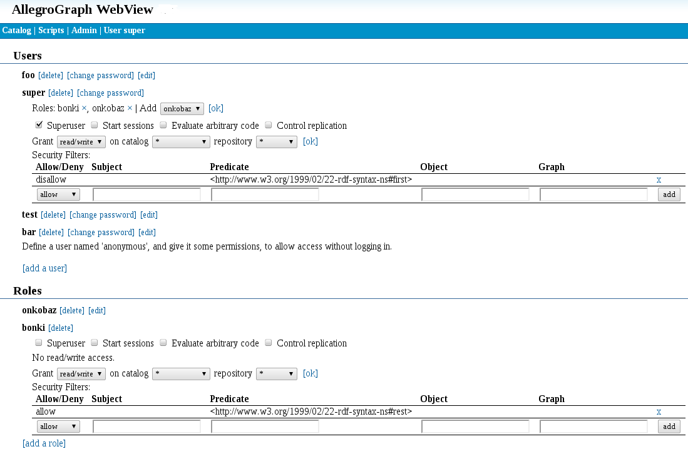

Introduction
This document describes the security implementation in AllegroGraph. See Security Overview for an overview of all security features in AllegroGraph.
Database security is primarily concerned with protecting the database from unauthorized access. This includes preventing unauthorized people from accessing data in any fashion (reading, adding, or deleting), and preventing authorized persons from doing things they are not authorized to do (preventing, for example, someone authorized only to read data from modifying data).
AllegroGraph uses industry-leading security features which allow you to protect your databases from unauthorized access and modification.
It does this by (1) only permitting registered users to access the system, (2) defining roles which grant specific permissions, and (3) assigning each user to one or more roles.
The distinction between authentication and authorization is important.
Users are authenticated when they access the database by providing a username and password which are known to AllegroGraph or, optionally depending on configuration parameters, when they provide an SSL certificate (see the various configuration options relating to SSL authentication in the Top-level directives for SSL section in the Server Configuration and Control document).
Authorization is an aspect of a role: are users assigned to a role authorized to access, add, or modify specific data? Roles are defined by an administrator, as described below, and users assigned to a role have a specific list of permissions, as we describe below. A user may have more than one role.
Note that user security depends in part on users keeping their relevant information secure. If someone other than the actual user knows the username and password and has access to other relevant information, the AllegroGraph will not be able to prevent that person from accessing data. There is support for anonymous users. These usually have a single, typically limited role assigned to them
All administrators and users should note that security is a joint responsibility. AllegroGraph cannot protect against access when passwords are compromised or when people can access the machine running the AllegroGraph server when they should not.
Administrators can use the tools provided by AllegroGraph along with their own policies and common sense to protect data from unauthorized use and modification and to facilitate authorized users in performing their legitimate tasks.
What can a role specify?
AllegroGraph administrators can define roles, and assign each user to one or more roles.
Here is what can be done to an AllegroGraph database:
Triples can be queried.
Triples can be added.
Triples can be deleted.
Configuration parameters can be modified.
If you can modify configuration parameters, then in fact you can do 1-3 as well. In general, only a few roles (typically assigned to users called superusers) should be authorized to do so.
For 1-3, it is desirable to be able to limit which triples can be accessed. The limits might be different for querying, adding, or deleting. Suppose, for example, the database contains information about employees at a company. Here are some possible roles and permissions:
Any employee can access other employees name, extension, title, and supervisor.
Employees can choose to allow their personal address and phone number to be accessed by any employee.
People in payroll can view salary data.
People in human resources can access and modify all employee data. They are the only people who can modify data.
Implementing security
Security in AllegroGraph is implemented by:
Defining users. A user is given a username and a password and can only access the system using that username and password. Each user has a set of permissions (from a system-defined list of available permissions).
Defining roles. A role is a collection of permissions. Roles are defined to make administration easier and more efficient. One could achieve the same end result by simply giving each user the permissions associated with the user's role(s). The permissions are Superuser, Start sessions, Evaluate arbitrary code, and Control replication. Further, read, write, or read/write permission can be set for each catalog and repository. We will discuss these permissions below.
Specifying filters. A security filter, described below, prevents roles or individual users from accessing (both reading and writing) triples with specified subject, object, predicate, and/or graph.
Classes of roles
Users can be grouped in various ways. Here are some suggested broad categories (these aren't AllegroGraph categories, just ideas about how you might classify your users):
Trusted expert roles: a trusted expert will usually be given all permissions. The administrator is a trusted expert and others may be as well. It is unusual for persons not part of your organization to be trusted. Users with all or most permissions have the ability to cause malicious damage.
Trusted ordinary roles: some users may be fully trusted but not programming experts. These persons usually are not given permissions which would allow them to accidentally compromise the system but are given all other permissions. Those permissions may be denied to ordinary users, even though they are trusted.
General internal users: often you will have databases which members of your organization will need to access, perhaps reading only, perhaps able to read and write. These users will normally not be given the same permissions as the trusted users.
Outsider roles: you may want your database to be viewable by outsiders. You may even want some outsiders to have the ability to write data. As a rule of thumb, outsiders should never have general permissions. A passwordless user named anonymous may be configured if desired to support outsiders.
Accessing AllegroGraph
A typical way to access AllegroGraph is through the AGWebView interface. It can also be accessed using a Java or Python client, Gruff, or Lisp (see Lisp Quick Start). We will discuss AGWebView access security in this document.
Managing Users
To open an AllegroGraph repository in AGWebView or using one of the AllegroGraph clients or to issue most commands using agtool or using the REST interface, you must either supply an AllegroGraph user name and password (except the anonymous user which, if created, does not need a password) or authenticate with an SSL certificate. Passwords must be set up even if SSL authentication is used (see the various configuration options relating to SSL authentication in the Top-level directives for SSL section in the Server Configuration and Control document).
This section briefly describes user-related tasks and how to perform them. The Managing Users document describes how to use AGWebView and agtool to create and manage users.
Initial Superuser
An initial superuser is usually created during the AllegroGraph server installation. This user typically appears in AllegroGraph documentation as user "test" with password "xyzzy". You should choose a completely different username and password for your superuser account.
This superuser can create and manage other users, start sessions, evaluate arbitrary code, and has read/write access to all repositories in all catalogs.
Note that you want to have at least one superuser at all times, because only a superuser can manage permissions and access for other accounts.
Usernames and passwords
User names and passwords are case-sensitive. A password is required for all users except for the anonymous user.
User passwords
A number of configuration options control user passwords (see Server Configuration and Control) These options allow:
Controlling whether a user can change their own password: the option
PasswordChangeAlloweddetermines whether users can change their passwords. The default isyesmeaning users may change passwords. If not allowed, password changes must be done by superusers.Controlling certain aspects of new passwords: the options
PasswordMinLength,PasswordMinUppercaseChars,PasswordMinDigitChars, andPasswordMinSpecialCharscan be used to require that new password have a minimum length, and contain a minimum number of uppercase letters, digits, and non-alphanumeric characters. All these parameters default to 0. They must be set in the configuration file in order for the associated restrictions to have effect.Controlling whether passwords expire: the option
PasswordExpirycan be set so that passwords expire after a certain amount of time after the last password change. When a password expires, the only operation that the user can perform is changing their password. ThePasswordExpiryGraceoption specifies the amount of time after a password has expired during which a new password will be accepted. After the grace period has expired, the user account is disabled and can only be re-enabled by a superuser.
Other restrictions on users
Other configuration options control other aspects of user behavior. In particular, sessions can timeout or users can be suspended or even deleted if:
The idle time since the last action exceeds the limit set by the
LoginTimeoutoption. The user is logged out if the time is exceeded. The default is no limit.If the number of failed logins (since the last successful login) exceeds the value specified by
MaxFailedLogins, the account will be suspended. Suspended accounts will be re-enabled automatically ifAccountUnsuspendTimeoutis set. Otherwise, such accounts must be re-enabled by a superuser.The time since the last use of an account is too great. If
AccountExpiryis set and the amount of time since the last authenticated activity of the account exceeds the setting, the account will be deleted. By default, inactive accounts do not expire.
Email notification of certain changes to user status
If you set up the SMTPHost configuration option to specify an email account and also the AuditEventsToEmail option, then emails will be sent via the specified SMTP host to the specified admin email address about user account status changes (suspended/unsuspended, disabled/enabled, password expired).
Ports
By default, the AllegroGraph server's HTTP API will open a random TCP port with a number greater than 1024 for new sessions (see the Sessions section in the HTTP Protocol - SPARQL Endpoint document). In order to allow a firewall more effective control over access to the AllegroGraph server, we recommend specifying a SessionPorts range in the agraph.cfg file, and then filtering only these ports.
Issues with transferring passwords over the internet
When running an AllegroGraph server that is accessible from untrusted networks (e.g. the Internet), administrators need to be aware that passwords will be transferred in unencrypted form between AllegroGraph clients and the server. To avoid exposing users' AllegroGraph passwords to malicious third parties, you should open the AllegroGraph service to untrusted networks only on an SSLPort (using the correct SSLCertificate settings) or through an SSL-enabled reverse proxy.
Security filters
A security filter can be set by an administrator (a superuser). It can prevent access (both read and write) to triples with a specified value for subject, predicate, object and/or graph.
What threats do triple-level security filters prevent?
Security filters can prevent users from accessing (both reading and writing) privacy-sensitive data. When querying, triples filtered out by a security filter will appear as if they weren't in the store in the first place. In contrast, attempts to add them or remove filtered triples will result in an error.
The administrator must take care to allow users access only to those triples that are safe for these users to see; this can be hard to accomplish with only subject/predicate/object-based filters when there is deep graph structure involved. In these cases, it is advisable to put triples that should be (or should not be) accessed by a certain set of users into their own graph, and define a filter set using that graph.
Setting security filters for a user or a role
Security filters can be set by a superuser in the user administration screen of AllegroGraph WebView. If you assign filters to roles, these filters will be merged into a set of effective filters for each user with that role accessing a store.
Enter the criteria for the filter pattern in the subject, predicate, object, graph fields of the filter table (use the regular part syntax for URIs:
To remove a filter, click the X mark next to the filter pattern.

Updating the set of filter patterns takes effect only for new sessions; sessions that are running while you modify the set of filters will still use the same triple pattern as before.
Effect of "allowing" or "disallowing" a triple pattern
Each security filter pattern can specify to "allow" or "disallow" a certain pattern of triples. Both types of pattern can remove triples from the set of triples that a user will see:
- disallow will filter out all triples that match the filter pattern.
- allow will filter out all triples that do not match the filter pattern.
This makes allow the more restrictive of the two filter types: it will remove every triple that doesn't match the filter pattern, whereas disallow only removes those triples that exactly match.
Composing security filters
As security filters are based on set intersection and set difference, a filter set with both allow and disallow filters will always result in the same set of triples when applied to a store, no matter in which order the filters are applied to the store.
The composition of the filters:
- allow predicate:<http://example.com/#only-this>, object: <http://example.com/#with-this>
- allow predicate:<http://example.com/#or-only-this>, object:<http://example.com/#with-this>
- disallow subject:<http://example.com/#some-sensitive-data>
will result in a store that appears to contain (from the perspective of the affected user/role) only triples with the predicates <http://example.com/#only-this> or <http://example.com/#or-only-this> and object <http://example.com/#with-this>, but will never contain any triples with the subject <http://example.com/#some-sensitive-data>.
Effect of security filters on local stores (security relevant)
Per-user and role security filters only affect HTTP clients, which does not include local Lisp clients. These have total access (read and write) to the store, no matter what security filters are in place.